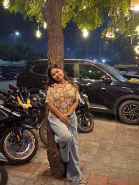

Building ideas
Exploring technology, making projects, and bringing concepts to life.
A curious mind, a creative heart, and a thousand little dreams. Welcome to my corner of the internet — a place where I get to be unapologetically me.
A little about me ↘
I'm Ayushi Singh. I love learning, exploring new ideas, and turning little sparks of inspiration into something meaningful. This space is my digital diary — a snapshot of what I care about, what I'm building, and where I'm headed.
Still learning. Always growing. And always finding new reasons to be excited about what's next.
Exploring technology, making projects, and bringing concepts to life.
Staying curious, picking up new skills, and seeing the world differently.
Keeping a little wonder in everyday life and making room for new possibilities.
Good things begin with a conversation. I'd love to hear from you.
Write me a note ↗